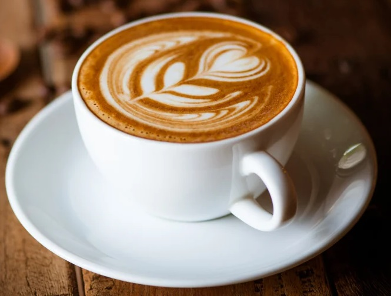
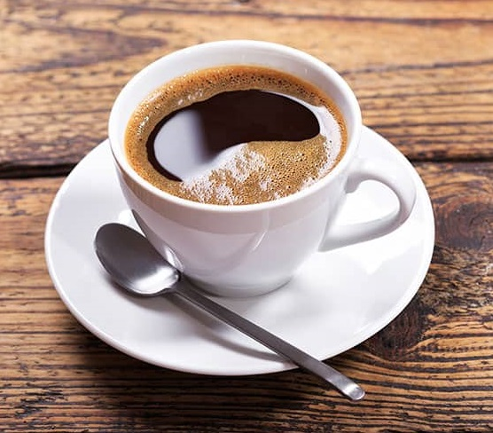
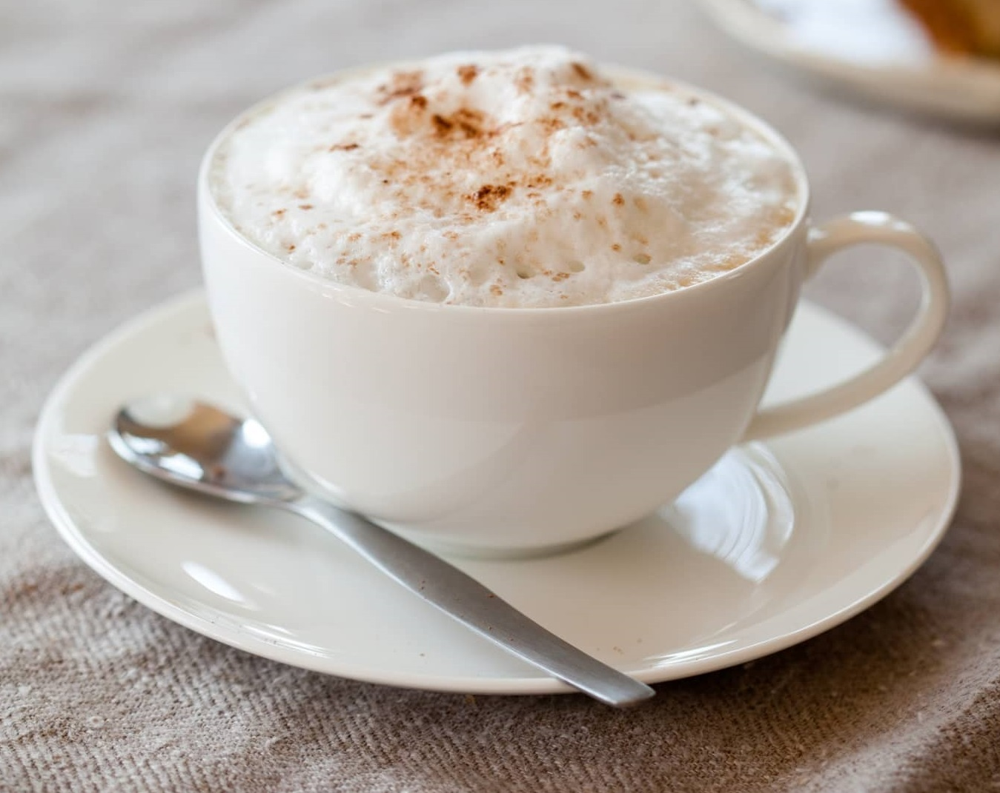
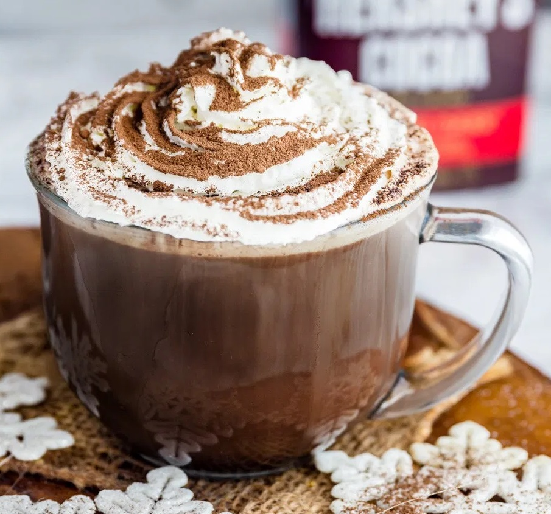

Cappuccino
A cappuccino is an espresso-based coffee drink that originated in Austria with later development taking place in Italy, and is prepared with steamed milk foam.
Americano
Americano is a type of coffee drink prepared by diluting an espresso with hot water, giving it a similar strength to, but different flavor from, traditionally brewed coffee.
Latte
A traditional cappuccino has an even distribution of espresso, steamed milk, and foamed milk. A latte has more steamed milk and a light layer of foam.Is a coffee drink of Italian origin.
Mocha
A mocha, also called mocaccino, is a chocolate flavoured warm beverage that is a variant of a café latte, commonly served in a glass rather than a mug. Other commonly.